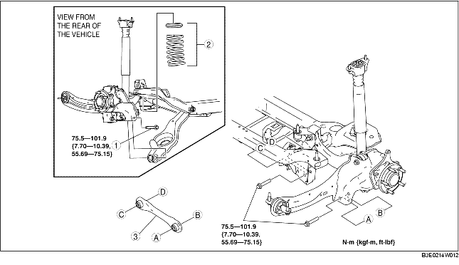

1. Remove the rear auto leveling sensor. (See AUTO LEVELING SENSOR REMOVAL/INSTALLATION.)
2. Remove the rear stabilizer. (See REAR STABILIZER REMOVAL/INSTALLATION.)
3. Remove in the order indicated in the table.
4. Install in the reverse order of removal.
5. Inspect the wheel alignment and adjust it if necessary.
(See REAR WHEEL ALIGNMENT.)

.
1. Support the rear lower arm using a jack.
2. Loosen the rear lower arm inner bolt.
3. Remove the rear lower arm outer bolt.
1. Install the rear lateral link so that the rib is facing toward the front of the vehicle.